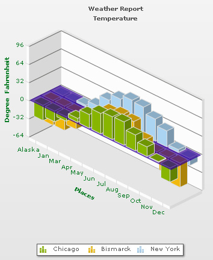

The 3D Combination chart (MSCombi3D.swf) is a true 3D chart that offers features like viewing from a specific camera angle, definition of light source, use of dynamic lighting, rotation etc. In this section, we describe how to set these options using XML/JSON attributes.
The various elements of a 3D Combination chart are shown below:
By default, the 3D chart is rendered with a default animation. If you wish not to show the initial plot animation, you can set animate3D attribute to 0.
To globally set off all animation use animation='0'. This will not only set off 3D animations, but also disable all animations applied using <styles>. The additional use of animate3D can override this value. Hence, a combination of animation='0' and animate3D='1' will disable all animations applied using <styles> but, enable animation of the 3D canvas. Again, animation='1' and animate3D='0' will enable all animations applied using <styles> but disable animation of 3D canvas. This setting will also disable chart canvas' rotation while using JavaScript API functions like view2D(), resetView() and rotateView(). The view will be updated instantly without any rotation or animation.
There is another attribute, exeTime, which influences the execution time that the chart takes to animate. It sets the time in seconds (can accept decimals) taken by the 3D elements of the chart to animate when the chart is rendered initially. This attribute also sets the time taken by the chart canvas to animate when the chart is transformed to any view (View3D, View 2D, Reset View) using context menu (right click menu). This is also applicable while using JavaScript APIs - view2D(), view3D, resetView() or rotateView().
Since this is a true 3D chart, it's rendered as a 3D model that is viewed from a specific camera angle. The camera can simply be defined as the eye of a real viewer. When you have set animate3D to 0, you can define the camera angle using two attributes - cameraAngX and cameraAngY.
When you use animation, you can also set up the starting camera view from which the camera view starts animating, and the final camera view to which the chart will finally be rotated. For this, you need to use startAngX, startAngY,endAngX and endAngY attributes.
Angle values for both sets (cameraAngY,cameraAngY and endAngX,endAngY) are same.
Camera Angle definitions: (when animate3D='0')
| Attribute | Range | Description |
| cameraAngX | 0 to 360/0 to -360 | cameraAngX attribute lets you specify the camera angle (for view around the chart vertically) from which the chart is viewed initially in no animation mode. If not specified, the default value is 30. |
| cameraAngY | 0 to 360/0 to -360 | cameraAngY attribute lets you specify the camera angle (for view around the chart horizontally) from which the chart is viewed initially in no animation mode. If not specified, the default value is -45. |
Camera angle definitions: (when animate3D='1')
| Attribute | Range | Description |
| startAngX | 0 to 360/0 to -360 | This attribute lets you specify the view angle (for view around the chart vertically) at which rotation of the chart starts (when the chart is initialized). The rotation stops at endAngX. If not specified, the default values for both the attributes are 30. |
| endAngX | 0 to 360/0 to -360 | This attribute lets you specify the view angle (for view around the chart vertically) at which rotation of the chart ends (when the chart is initialized). The rotation starts at startAngX. If not specified, the default values for both the attributes are 30. |
| startAngY |
0 to 360/0 to -360 | This attribute lets you specify the view angle (for view around the chart horizontally) from which rotation of the chart starts (when the chart is initialized). The rotation stops at endAngY. If not specified, the default values for both the attributes are -45. |
| endAngY | 0 to 360/0 to -360 | This attribute lets you specify the view angle (for view around the chart horizontally) at which rotation of the chart ends (when the chart is initialized). The rotation starts at startAngY. If not specified, the default values for both the attributes are -45. |
The picture below shows a rotational motion (the curved arrows) horizontally around the chart. When the chart is viewed from the front, Y angle is 0. From this position, when the camera moves towards the right face of the chart, camera Y angle increases with positive values. When Y angle is 90, the camera views the right face of the chart. When Y angle is set to 180, the camera views the back face of the chart. The camera returns to zero angle position when a complete rotation of 360 is made.
From zero position again, when camera moves towards the left face of the chart, Y angle increases with negative values. Y angle will be equal to -90 when the camera exactly faces the left face of the chart. Similarly, Y angle will be -180 when the camera comes in front of the chart's back face, and -360 when camera returns to the zero position.
The picture below shows a rotational motion (the curved arrows) vertically around the chart. When the chart is viewed from the front, X angle is 0. From this position, when the camera moves towards the right face of the chart, camera X angle increases with positive values. When X angle is 90, the camera views the right face of the chart. When X angle is set to 180, the camera views the back face of the chart. The camera returns to zero angle position when a complete rotation of 360 is made.
From zero position again, when camera moves towards the left face of the chart, X angle increases with negative values. X angle will be equal to -90 when the camera exactly faces the left face of the chart. Similarly, X angle will be -180 when the camera comes in front of the chart's back face and -360 when camera returns to the zero position.

Shown below are the charts with specified custom angles. For example, if you set endAngX = "10" and endAngY="60", the chart will look like the following image. Same view will be shown when animate3D='0' and cameraAngX = "10" & cameraAngY="60".
Likewise, if you set endAngY="-160" and endAngX="190", the chart will look like the image below. Same view will be shown when animate3D='0' and cameraAngX = "-160" & cameraAngY="190".
Please note that the default value for cameraAngX/startAngX/endAngX is 30 and default value for cameraAngY/startAngY/endAngY is -45.
The Combination 3D Chart has two lighting systems using which the chart elements are lighted. The light source may be fixed outside the chart, or you might address it as Chart World. This causes only those sides of the chart to get the light which face the light source. Thus, when the chart is manually rotated, dynamic shades are created on the chart surfaces. This system of lighting system is called Dynamic shading.
Another type of lighting system is there where the light source is fixed with the chart. You may call it world lighting. In this case, the light source rotates with the rotation of the chart. Hence, the surface facing the light source gets lightened and continues to be in the bright side despite any manual rotation of the chart being made, whereas the surface not facing the light keeps remaining in darkness with every chart rotation.
By default, the chart is set in world mode. However, the dynamicShading attribute will let you decide whether to keep the chart in world mode or non-world mode. If you set dynamicShading to 1, the chart will be in dynamic shading/non-world mode.
Example:
<chart dynamicShading="1">
Let's compare the following two charts: one with dynamicShading="0" and the other with dynamicShading="1".
Initially, there is no difference between the two charts. The charts will be rendered in the same way. Same surfaces of both the charts are facing the light source.
(From a particular point of view, the two charts are looking same after being rendered, although the left one is in world mode and the right one is in non-world. Note that the reference viewpoint will be same in all the cases discussed below. )
| dynamicShading="0" | dynamicShading="1" |
Shown below are the compared sequences of the two charts, manually rotated by similar angles.
| dynamicShading="0" | dynamicShading="1" |
You might notice that for both the charts, the light source is at the top right corner of the chart center. In case of the chart with dynamicShading="1" (charts on the right hand side), since the light source is fixed in that place, it keeps on lighting up the chart surfaces in front of it. On the other hand, the left chart, with dynamicShading="0", keeps remaining in darkness when any rotation occurs.
In the simulated 3D world of the chart, you can specify the light source w.r.t the chart world coordinate system. You can do this using the following attributes.
| Attribute | Range | Description |
| lightAngX | 0 to 360/ 0 to -360 | Using this, you can specify the angular position of the light source (for X-axis) w.r.t the chart world coordinate system. |
| lightAngY | 0 to 360/ 0 to -360 | This attribute allows you to specify the angular position of the light source (for Y-axis) w.r.t the chart world coordinate system. |
The values of lightAngX and lightAngY are same as cameraAngX/startAngX/endAngX and cameraAngY/startAngY/endAngY, as discussed earlier in this page (in the "Specifying Camera Angles" section).
To get a clear picture, let us go through a visual tour and see how the light source can be placed using X and Y angles.
Example:
<chart lightAngX="0" lightAngY="-90">
Example:
<chart lightAngX="90" lightAngY="0">
Example:
<chart lightAngX="0" lightAngY="90">
Example:
<chart lightAngX="180" lightAngY="0">
bright2D attribute provides maximum brightness to the chart while rendering in 2D mode. This is applicable only when you've set dynamicShading to 1. However, once you set this attribute to 1, it won't allow you to use lightAngX and lightAngY attributes. Rather, it automatically sets up the light sources to give the brightest view of the chart in 2D mode.
Example:
<chart bright2D="1">
You can control the intensity of the light that falls on the chart elements. The intensity attribute will enable you to do so. The range of this attribute lies between 0 to 10. 10 will provide light with maximum intensity, and you will get the brightest view of the chart. If you set the value to 0, light will be provided with least intensity. However, the chart will never appear in full darkness even you set intensity to 0. A faint light is always available. By default, the value is set to 2.5.
Example:
<chart intensity="10">
If you set intensity="10", i.e., to the maximum , the chart will look like this:
3D chart has 3 walls namely, XY, YZ and XZ. You can set the depth of the chart walls using the following set of attributes.
| Attribute | Description |
| YZWallDepth | It determines the depth of the YZ wall of 3D chart. |
| ZXWallDepth | It determines the depth of the ZX wall of 3D chart. |
| XYWallDepth | It determines the depth of the XY wall of 3D chart. |
Example:
<chart YZWallDepth="55" ZXWallDepth="45" XYWallDepth="35">
If you specify the values given in the above example, the chart will look like this:
If all the attributes are set to 0, the chart will look like shown below.
You can see above that each wall is looking like a thin plane.
In a 3D combination chart, more than one DATAPLOT types exist due to different datasets. Therefore, to get a distinct view of all the plotted datasets you may want to specify a gap between them. The zGapPlot attribute will let you do so.
Example:
<chart zGapPlot="100">
If you assign a value to zGapPlot, a gap between the plotted datasets will be created. For example, if you set zGapPlot="100", the chart will look like this:
On the other hand, if you assign 0 to zGapPlot, the chart will take the following shape, with no gap between the dataplots:
You can set the depth (3D thickness) of each DATAPLOT object using zDepth attribute.
Example:
<chart zDepth="75" >
Shown below is a chart with each dataplot's thickness value equals to 75.
In a Combination 3D chart, you can plot multiple number of datasets which can be rendered as Column. These column sets can be arranged in the chart in 2 modes: clustered or manhattan. The clustered attribute will let you choose any one of them. By default, the value of clustered is 0, i.e., the chart appears in non-clustered mode. To change the mode to clustered mode, you need to use clustered='1'.
Example:
<chart clustered = "1">
If clustered is set to 1, the chart columns will be in clustered mode. This image below shows a chart in clustered mode:
On the other hand, if clustered is set to 0, the chart columns will appear in manhattan mode, as shown in the example image below:
You can apply emboss or bevel effect to both divisional lines and trendlines. The divLineEffect attribute will let you this. You can specify one of the three values: "EMBOSS", "BEVEL" or "NONE".
Example:
<chart divLineEffect="none"> or <chart divLineEffect="emboss"> or <chart divLineEffect="bevel">
The following attributes will let you configure the zero plane settings.
| Attribute | Description |
| zeroPlaneColor | Color for the Zero Plane. Zero Plane is the line/plane that appears at 0 y-position on canvas, when negative data is being shown on the chart. |
| zeroPlaneAlpha | Alpha of zero plane. (Value Range 0-100) |
| zeroPlaneMesh | Whether to draw a mesh or not. If set to 1, a mesh on the zero plane of the chart will be drawn. |
By default, a gray mesh is shown as zero plane.
If you set zeroPlaneMesh to 0, the chart will have a non-meshed plane as shown below:
Example:
<chart zeroPlaneMesh="0">
You can set a color to zero plane using zeroPlaneColor attribute. For example, if you set zeroPlaneColor="330099", the chart will look like this:
Example:
<chart zeroPlaneColor="330099" zeroPlaneMesh="0">
Let's see how you can change the alpha of zero plane using zeroPlaneAlpha attribute.
Example:
<chart zeroPlaneColor="330099" zeroPlaneAlpha="30" zeroPlaneMesh="0"> 
You can set border around the dataplots. This will improve the data interpretation quality of the chart a lot. The showPlotBorder attribute will let you decide whether to draw a border or not. By default, dataplot borders are drawn.
Example:
<chart showPlotBorder="0">
The difference between a chart with and without dataplot border is shown below.
If showPlotBorder is set to 1, the chart will look like this:
On the other hand, if showPlotBorder is set to 0, the chart will look like this:
You can render a combination 3D chart as a 2D chart initially. You need to use is2D attribute for this.
Example:
<chart is2D="1">
As shown below, if is2D is set to 1, a 2D chart will get rendered initially.
The chart area can overlap the extra chart elements (caption, sub caption and legend) at the time of scaling (zooming) or at 100% view. If you set chartOnTop attribute to 1 the chart area will be placed above these elements. On the other hand, if you set chartOnTop to 0, caption, sub caption and legend will always appear on the top of the chart.
Example:
<chart chartOnTop="1">
As shown below, the chart area overshadows the extra chart elements when you zoom in using the mouse scroller. This is possible only if you set chartOnTop to 1.
On the other hand, if chartOnTop is set to 0, the chart will look like this:
As shown above, the chart area now goes under the extra chart elements.
To improve chart's visibility you may want to create a gap (vertical space) between the X-axis and X-axis labels. Similarly, you might need to specify gaps between Y-axis & Y-axis values. The following two attributes will let you do the same.
| Attribute | Description |
| xLabelGap | This attribute creates a vertical space between the X-Axis and X-Axis labels. |
| yLabelGap | This attribute creates a horizontal space between the Y-Axis and Y-Axis values. |
Example:
<chart xLabelGap="50" yLabelGap="50">
Now, for example, if you set xGapLabel="50", the X Axis labels will maintain a gap of 50 from the X-AXIS, as shown in the image below:
Similarly, if you set yGapLabel="50", the chart will create a gap of 50 between the Y Axis values and the Y Axis. The gap will look like the figure given below: